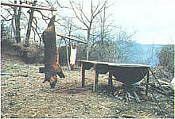

Leading your hogs to slaughter isn't as difficult as you might think. "In a pig's eye!" you scoff? Well, then read how one enterprising pork farmer combines experience and know-how in . . .
Raising and harvesting a hog is a practical way to put nourishing food on the family table while taking an important step toward self-sufficiency . . . and away from artificially inflated supermarket prices and hormone-gorged meat. Nor is butchering your own swine all that hard to do. In fact, with a little preparation and common sense, you can make sure that the animal doesn't suffer, that the slaughtering goes smoothly, and that the entire operation ( not including chilling and sectioning) takes only two or three hours.
It should be pretty obvious that rearing and slaughtering your own pigs can guarantee quality pork on your table. Furthermore, many do-it-yourself meat processors feel that killing and preparing an animal can serve to remind a consumer that some of the food he or she eats was once a fleshand-blood creature and didn't come into this world as a tidy, prepackaged chop. And whether or not you think that factor is important, there's no doubt that doing your own slaughtering is a good way to save money and add to your self-reliance skills.
PICKING YOUR PORK
Let's assume that you've raised a pig and that the porker is now about the right size (175 to 250 pounds) and age (8 to 10 months) for butchering. (Overly fat or old swine don't usually make for good eating.) Generally, a barrow (a male hog that's been castrated before reaching sexual maturity) or a gilt (a young female) is the best candidate for table fare. Boars (uncastrated males) and sows (adult females) in heat should be avoided at butchering time, since their flesh tends to have an unpleasant undertaste often described as "musky" or "rank". (If you do wish to harvest such an animal, be sure to geld the boar and allow the wound to heal first . . . or wait until the female goes out of heat.)
When you've selected your animal, it's time to lead the ham to slaughter. The remainder of this article has been arranged sequentially . . . in an effort to present a thorough, step-by-step guide for the novice hog processor.
EQUIPMENT
It's important to assemble your equipment before you begin the task. There are few experiences more likely to ruin your first slaughtering efforts than having to search frantically for a needed tool when you're halfway through the job. As an absolute minimum, you'll need a good knife that's suitable for sticking and gutting . . . a sharpening stone ... bell scrapers for removing the hair and scurf (these specialized and relatively inexpensive devices are well worth a trip to your farm supply store) . . . a hot water thermometer . . . a large tub or vat for scalding the pig . . . and a butcher's saw or a hacksaw.
To stun the animal before sticking it, you'll also need a pistol or rifle of a .22 caliber or larger (or - at the very least - a heavy hammer). You'll also want a sturdy table or platform to support the carcass during scraping, and a tub to catch the viscera when the animal is gutted.
A sharp knife will be all but invaluable at every stage. Its blade should be at least six inches long and honed to a razor's edge. And to insure that the whole operation goes as smoothly, keep a sharpening stone handy and draw the steel across it occasionally as you work . . . the job will be easier, and you'll be less likely to cut yourself.
It's a good idea to have one or two helpers on hand, especially if you can get an experienced slaughterer to pitch in. But even when aid is available, hoisting the bulky porker around is a task best accomplished by a come-along jack or pulley system. (Farmers who have tractors with hydraulic lifts can simply use that machine for this job.) When you realize that you'll be dipping the carcass into a caldron of steaming water at least once, then suspending it from a high-hanging horizontal brace for cleaning and chilling, I think you'll see the wisdom of enlisting both human and mechanical assistance.
WHEN AND WHERE TO SLAUGHTER
Most farmers prefer to wait for the chilly days of late fall, or even early winter, before killing swine. You see, the finished carcass must hang and cool for at least 24 hours before the meat can be sectioned and cured or frozen. If the weather is cold enough, the pork can simply be hung from the rafters of an unheated barn or shed, or on an open-air frame, until the flesh reaches the proper internal temperature of 33° to 35°F. But if the day is too warm to allow the hog's natural body heat to dissipate quickly, the home processor has to resort to the shaved-ice or iced-brine method of cooling (detailed on page 73) . . . or pay for hanging space in a commercial meat locker or cold-storage warehouse.
Generally speaking, it's best to slaughter hogs at an outdoor site that's close to both the pig's pen and to the location where you plan to scald and gut the animal. Swine aren't the easiest critters to move around under any circumstances, and it's quite important that you not excite or panic a creature that's about to be butchered, since doing so will definitely lower the quality of the meat. Your chosen site should have a good supply of water available and be out of the way of ongoing farm activities. A more or less ideal slaughtering arrangement is illustrated in Fig. 1. (If you do the deed indoors, you'll want to be sure that the building is well ventilated.)
The setup must include a way to scald the carcass after the pig is killed and bled . . . in order to loosen the hair and scurf (a thin layer of membrane on top of the hide) so that they can be scraped off without losing a lot of the skin and fat underneath. I usually add a cup or two of lime to the water in the kettle . . . but you could substitute lye or a couple of handfuls of hardwood ashes. (One drawback to cold-season slaughtering is that the tusker's growth of bristle will be heavier and more difficult to remove.) The scalding tub should be positioned next to your table or platform and arranged so that a fire or other heat source can be built underneath. I burn dry, seasoned wood, but some folks (especially those who slaughter regularly) rig up a propane cooker or similar device under the caldron.
To prepare the scalding vat, fill your tub about two-thirds full of water, toss in the lime or whatever, and begin heating the solution a good hour before you plan to stick your pig. The temperature of the liquid needs to be about 145 °F before you use it. (If you don't have some kind of hoist to maneuver the carcass in and out of the pot, you can make your lifting job alot easier by leaning the container at a 45 ° angle against the scraping table.)
You'll also need to arrange for some sort of structure from which to hang the pig during butchering. If there's a convenient and sturdy tree limb available, fine. If not, construct some sort of frame. Fig. 2 shows three practical devices, but anything that's strong enough to support the hog securely off the ground (the hanging point should be about seven feet high), and close enough to the scraping table to ease the job of transferring the carcass, will do.
STUNNING AND STICKING
Pigs that are to be slaughtered shouldn't be fed for 24 hours before the event, but do see that they have plenty to drink.
The lack of solid food and abundance of liquid will help flush out the animal's digestive tract and make butchering easier. It's also a good practice to place your selected porker in a pen by itself for a few days prior to sticking. Such isolation will have a calming effect on the animal, and protect it from the normal porcine jostling that goes on in enclosures where several pigs are resident. A nervous, excited hog will "flush" just as a human does. If the beast is slaughtered while the tissue close to the skin is still engorged with blood, thorough draining will be difficult . . . and the butchered meat is likely to be bloody and much more prone to subsequent spoilage. Similarly, a bruised hog will have damaged tissue which would have to be cut out and discarded.
I prefer to stun a hog with a gunshot to the head prior to sticking (killing) it . . . although some butchers disagree, claiming that the carcass won't bleed thoroughly. Certainly, though, handling an animal that's been mercifully knocked senseless is easier than going hand-to-hock with a panicked porker!
The technique I use involves drawing an imaginary "X" between the pig's eyes and ears, and aiming for a spot about an inch above the junction of the cross. The approach to the animal should always be made slowly and calmly in an effort not to frighten it, with the gun held ready for instant use. If the hog seems skittish and won't stand still, place a pan of feed on the ground and wait for the critter to begin eating before you shoot.
Once you've stunned the animal, it will sink to its knees or fall on its side. Quickly roll the hog over on its back and hold it in that position by grasping the forelegs securely. The person who is to do the sticking should locate the tip of the swine's breastbone at the throat, and make a 2- to 4-inch incision from that point forward along the exact center of the neck. The knife is then inserted deeply into this cut at a 45° angle (pointing toward the tail), forced down and back to a point about 6 inches below the front of the sternum, and twisted slightly before it is withdrawn (see Fig. 3). The thrust should not be made too far back into the body, though, because the blade could penetrate the chest cavity and cause internal bleeding and blood clots.
The purpose of twisting the knife before withdrawing it is to be certain of severing the large branching vein and artery that lie beneath the point of the breastbone and thus insuring a proper bleed. (Some butchers advise against this motion, because they say it mutilates a portion of the shoulder meat.)
"Bleeding out" the carcass is very important if you're to avoid the possibility of "sour" meat . . . that is, pork that becomes tainted because the tissues retain too much blood. Though an animal will usually drain adequately while lying on its side, hanging the carcass upside down is a surer method. Either way, when the flow of blood has slowed to an occasional driblet, your swine will be ready for the next step.
SCALDING AND SCRAPING
Once the animal has been thoroughly bled, remove the carcass to the scalding vat, lowering it into the hot water head first. Gently rock the pig's body back and forth to prevent overscalding - which can cause the bristles to set - and soak it for 3 to 6 minutes, occasionally testing the looseness of the hair by twisting and trying to pull out small tufts with your fingers. Because of the problems caused by leaving the swine in the pot too long (the meat could even begin to cook), it's best to err on the side of caution . . . you can always reimmerse the carcass later, if necessary.
Next, hoist the scalded hog onto the table and use a bell scraper to begin stripping the hair and scurf from the body (simple skinning with a knife would result in a tremendous waste of lard). This is most easily accomplished by tilting the tool away from yourself so that it rests on its far edge, then drawing it toward you along the carcass. Apply enough pressure to remove the hair, but not so much that you cut or otherwise damage the underlying skin. You'll want to scrape the head and feet first - since those parts tend to cool most quickly - and to make your strokes follow the natural lay of the animal's hair.
As soon as all the bristles have been scoured away, pour some hot water over the body and place the bell scraper flat against the porker's skin, moving the tool in a rotating motion. This will massage out the dirt and remaining scurf from the hide. (When all of the hair and scurf have been removed, even a formerly black hog will be white.) Next, use a large hook (a bale shifter from the haymow works fine) to pull off the dewclaws and toes. Finally, clean up the carcass with a stiff bristle brush, and remove any stray tufts of hair with a sharp knife.
If your scalding tub is too small to accommodate the whole hog, simply soak and scrape the front end first, and then tackle the hindquarters. (This isn't meant to be considered a hard and fast rule, but since the head is one of the most difficult parts to clean, I prefer to get it out of the way early, when the water is closest to the correct temperature.) If you encounter especially stubborn patches of hair but don't want to risk overscalding the carcass, you can cover the tough spots with a burlap sack and then pour hot water over the fabric before working on the hide again. (Really difficult tufts of bristle can be singed off with a blowtorch, if necessary.)
FIG.4 HANGING THE CARCASS
After the scalding and scraping process is complete, the hog is ready to be hung and gutted. A slaughtered pig should be strung up by the hind-leg sinews that are known as gambrel tendons. Cut through the skin on the backs of the rear limbs between foot and hock (being careful not to sever the tendons themselves), and gently pull the fibrous connective tissue loose from the surrounding flesh.
To hang the carcass, you can insert a sturdy wooden dowel, an axe handle, a metal pipe, or the hooks of a short singletree under the gambrel tendons (see Fig. 4). Then attach a line to your pole (the stick is called a gambrel), and use it to hoist the corpus and suspend it from your butchering structure. The swine's rear legs should be spread at least 14 inches apart, and neither the animal's head nor its forelegs should touch the ground. A final scrub-down of the body after hoisting will insure that you have a clean hide to work on . . . and a tub placed under the carcass will serve to catch the innards as they fall.
EVISCERATION
The object of gutting the hog is to remove all of the internal organs, the leaf fat (the layers of built-up adipose tissue around the pig's kidneys, which is used in making lard), and the head . . . leaving only the meat portions of the carcass. It's a good idea to work slowly when eviscerating an animal (especially if you're new to the job), because mistakes can be costly. Should you rupture the viscera, for instance, a great deal of meat could become contaminated. (If, despite your best efforts, you do puncture the intestines or organs, wash the meat off thoroughly with cool, clean water as quickly as you can.)
It's a good idea to start by cutting of the head, because doing so will permit the draining of any residual blood which isn't trapped in the body cavity. To accomplish this, first make a cut all the way across the back of the neck, just above the ears and at the backbone's initial joint. Then sever the gullet and windpipe so that the head can drop forward, and continue cutting around the ears . . . to the eyes . . . and on to the point of the jawbone (this pattern allows the head to come free, while leaving the jowls on the body). If you intend to use the head, it should be cleaned, trimmed, and chilled as soon as possible.
Next, score the belly downward along its midline, from a point between the hams to the incision made when the pig was stuck, being careful not to cut through the stomach wall. Then place your knife deep in the neck wound - its point against the backbone - and cut upward, using the blade to split the breastbone and divide the first set of ribs. (If you're butchering an animal that's older or heavier than is usual for a tablebound hog, you may need a saw or cleaver to split the sternum.) At this point you'll be able to see whether you did a good job of sticking the pig . . . because a substantial flow of blood from the chest cavity will mean that you cut too deep when you stuck the swine.
If your animal is a male, go on to remove the penis, or "pizzle". First, slash through the skin and fatty layers on either side of the organ, then lift the member up and cut underneath it. Continue carving while pulling the penis back towards where it attaches between the hams, then slice it off.
Now, make a small cut in the abdominal wall at a point high up between the hind legs . . . place the hand holding the knife inside the animal, with the tip of the blade pointing outward . . . and slice downward, exerting pressure on the heel of the cutting edge. Your fist will crowd the intestines aside and lessen the danger of puncturing the viscera. When the wall of the belly is cut through, the innards will fall forward, though they'll still be attached to the body by muscle fiber and the digestive tract.
The next step is to cut into the lean meat between the two hams until you hit the "aitch", or pelvic, bone. Place your knife's point against the center seam of the bone and strike the blade's haft with the palm of your hand. The pelvic girdle should split easily, although in butchering older hogs it's sometimes necessary to use a saw to separate the halves.
SLAUGHTERHOUSE FIVE
If you're needing more knowledge about raising and slaughtering hogs, the mini-library listed here can put you on the road to swine mastery.
Approved Practices in Swine Production by James K. Baker and Elwood M. Juergenson (The Interstate Printers & Publishers, Inc., 1971). The textbook format is a little dry, but this book is about as thorough an exposition on all aspects of swine culture as anyone could ask for.
A Complete Guide to Home Meat Curing (Morton Salt Company, 1967). A step-by-step guide to butchering, curing, and sectioning hogs, beef, poultry, and game. The chapters about preserving meat are particularly useful.
Backyard Pig and Sheep Book by Ann Williams (Prism Press, 1977). Williams' information on slaughtering is a bit sketchy, but the sections on hog husbandry in this British publication are interesting and have a nice, no-nonsense tone.
Small-Scale Pig Raising by Dirk van Loon (Garden Way Publishing, 1978). Another good book for anyone who plans to raise and butcher pigs on a small farm. The presentation is thorough and seems geared to the needs of both novices and experienced smallholders.
Raising the Homestead Hog by Jerome D. Belanger (Rodale Press, 1977). Full of useful information for the small-scale pig farmer, though a bit inclined to take the reader's knowledge for granted when it comes to slaughtering. (This book can be obtained for $11.95 - plus 95 cents shipping and handling - from Mother's Bookshelf (restricted) , P.O. Box 70, Hendersonville, North Carolina 28791.)
Once you've done so, grasp the bung (anal) gut slightly below the split in the aitchbone and loosen it by pulling upward toward the tail. Starting in the front, cut completely around the bung with your knife, being careful not to puncture it. When the end is free, close it off with a piece of cord to prevent spillage and use the string to pull the gut out and down, trimming around it cautiously where necessary.
When the bung gut has been worked down toward the entrails, the entire mass of the innards should be gently tugged out and downward . . . allowing as much fat as possible to remain along the backbone. Take a firm hold on the viscera (leaving the kidneys and leaf fat alone), and roll the mass forward, exposing the diaphragm, which separates the chest and abdominal cavities. The gullet (which runs through the center of the muscular partition) should be severed here, permitting the organs and entrails to fall free into the catch tub. If the small intestines are to be used for sausage casings or chitterlings, have someone turn them inside out, wash them, scrape them with a blunt stick, and then soak them in a weak solution of lime water for 12 hours or so. (This cleaning should be done immediately, while the guts are still warm.)
Should you want to keep the pig's liver, simply cut it off and trim out the gallbladder, washing the organ in cold water and then chilling it. (Some folks like to drain the liver by splitting the thin end and hanging the organ thick end up.)
The hog's heart and lungs can be removed from the chest cavity by cutting through the diaphragm at the point where the red muscular portion joins the white connective tissue. This incision will expose the vital organs, which can then be pulled down and severed from the backbone. Discard the major veins and arteries from the heart and split it open, washing it - as you did the liver - and chilling it immediately.
Most professional butchers like to split the backbone at this point. To do so, wash out the inside of the carcass, then saw down the middle of the spine, as close to the center as possible. Use long, even strokes, and cut from the belly side . . . moving around to the back side only if the cut begins to veer off center. It's best to leave about 15 inches of uncut skin at the shoulders. Doing so will hold the body together, make it easier to handle, and prevent it from slipping off the gambrel if the sides happen to be unevenly matched in weight.
Now, remove the kidneys and "fist out" the leaf fat. This is accomplished by holding the end of the mass of adipose tissue with one hand, making a fist of the other, and pushing it upward between the leaf lard and the cavity wall to separate the fatty mass from the membrane that holds it in place.
Finally, use your knife to take the outer layer of fat and skin off the inside of the hams, leaving only the thin fibrous membrane that you'll find underneath. This process is called "facing", and it should be done at this point (rather than during the cutting and trimming procedures that follow hanging the carcass to cool) because the material is easier to remove while it's warm, and because doing so will aid the chilling process.
When the evisceration is complete, wash the carcass thoroughly one final time. And do be sure to dispose of the hog's viscera in a sanitary fashion. Simply throwing the innards on a compost heap is a very bad idea, because they're sure to attract dogs and other predators, as well as insects. Instead, bury the waste several feet deep to contain the odor of decomposition and to discourage animals from unearthing it.
CHILLING
The hog should be chilled at a temperature of between 33° and 40°F for at least 24 hours before sectioning and freezing or curing. This is extremely important, since trying to preserve meat that has not had the chance to gradually reach the proper internal temperature can result in souring. If you're hanging the carcass outdoors or in a barn or shed (as opposed to a meat locker or coldstorage warehouse), be sure to rig it high enough to be well out of reach of dogs, cats, and other likely scavengers. If insects are still a problem at butchering time, build a cage or tent around the hanging meat from some sort of screening material. Don't wrap the pork with gauze or sacking, though, because the covering would drastically slow the loss of body heat.
The best way to determine that the carcass has been properly chilled is to insert a meat thermometer in the center of one ham (the thickest, slowest-to-cool portion of the body). When the gauge registers a reading of 33° to 35°F, your hog is ready to be sectioned. Never try to cure or freeze meat that hasn't cooled to an internal temperature of 40°F or lower.
If the weather is too warm for proper chilling, and getting the pork to a meat locker or similar facility isn't feasible, you can use iced brine to lower the temperature of the carcass. First, section both halves of the swine as shown in Fig. 5. Then fill a large, clean barrel about a third full of water, stir in three pounds or so of table salt, and add some large chunks of ice. Next, pack the meat sections in the tub. The ice brine will be colder than regular ice water, chilling the pork thoroughly (again, use the thermometer to check). As an alternative, you could place a layer of chipped or shaved ice on a table, spread the split carcass on top, and put another layer of ice over it. This method is not as efficient as using iced brine, but it will do the job.
TABLE MEAT
Once the pork has been properly chilled, it's ready to be sectioned, then frozen or cured. Besides preparing the obvious cuts - chops, hams, roasts, ribs, bacon, and so on - you can find a use for very nearly every part of the pig if you've a mind to. (The old saying about using everything but the oink is only a slight exaggeration.) The head, for instance, can be used for making souse meat, headcheese, and other down-home delicacies (see " Pozole, a Mexican Treasure " on page 188). Jowls can be cured or smoked, and the large quantities of fat that your porker has provided you with can be rendered for lard or used in making soap. Trimmings are just the thing for preparing your own sausage, either link or bulk, and pickled pig's feet are considered by many to be a gourmet's delight. You can even grind up the odd parts (like the ears, tail, and excess skin) for use in scrapple.
An old-fashioned hog slaughter may not be as easy as going to the supermarket and buying the cut you want for dinner, all wrapped up in pristine plastic. But it can provide you with economical, wholesome meat for the family table . . . and whole-hog satisfaction as well!
|
 |
|
|
|
|
|
|